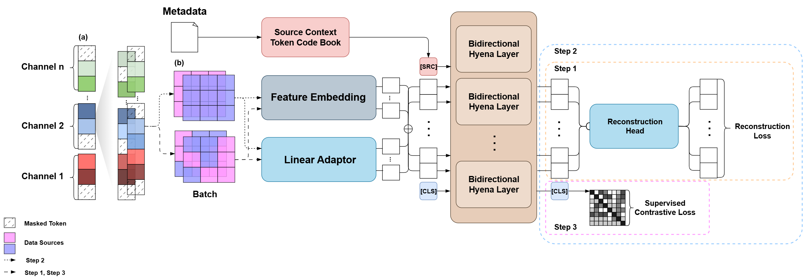

Cell Painting captures how cells respond to drugs and genetic changes. Projects such as the JUMP Cell Painting consortium are producing large datasets that could form a shared atlas of cellular biology.
Batch effects get in the way. Differences between labs, equipment, and experimental conditions can overwhelm the biological signal. Methods such as ComBat and Harmony can correct a fixed dataset, but new data requires fitting them again.
CellPainTR
We developed CellPainTR, a Transformer that learns morphological representations robust to batch effects. The goal is to compare studies without refitting a correction method for every new dataset.
The CellPainTR framework. The model (c) takes features from a standard Cell Painting pipeline (a, b) and produces corrected representations. A learnable source-context token helps separate technical variation from biology.
Three Training Stages
Training has three stages:
Self-supervised pretraining: Predict masked features to learn common morphological structure.
Intra-source fine-tuning: Use contrastive learning to group biological signals while suppressing variation within one source, such as plate effects.
Inter-source generalization: Train on several sources at once to align their representations.

The model learns general features through reconstruction, refines them within individual sources, then mixes sources to learn a source-invariant representation.
Results
On JUMP, CellPainTR achieved state-of-the-art results for removing batch effects while preserving biological signal. In the plots below, raw samples separate by source (bottom left). After training, sources mix while mechanism-of-action clusters remain distinct (right).
The top row is colored by biological class (MoA), the bottom by source. CellPainTR mixes sources while keeping biological clusters distinct.
Out-of-Distribution Performance
We also tested CellPainTR on the unseen Bray et al. (2017) dataset from another lab. Without retraining or fine-tuning, it outperformed every baseline, including methods refit on the new data.
Where This Could Go
These results suggest that a pretrained morphology model could serve as a shared reference across studies. Researchers could map small, new experiments into a larger biological atlas without fitting a correction pipeline each time. CellPainTR is an early step toward that goal.
Citation
BibTeX
@article{caruzzo2025cellpaintr,
title={CellPainTR: Generalizable Representation Learning for Cross-Dataset Cell Painting Analysis},
author={Caruzzo, Cedric and Ye, Jong Chul},
journal={arXiv preprint arXiv:2509.06986},
year={2025}
}